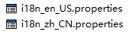
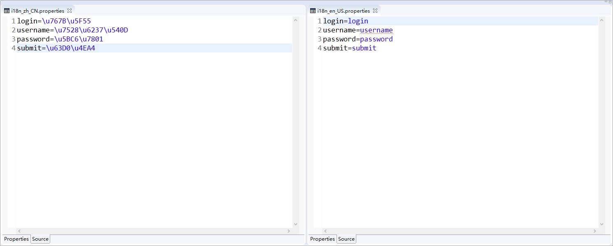

一 SpringMVC流程
(一) 什么是MVC模式
MVC是一种设计模式
M-Model 模型（完成业务逻辑：有javaBean构成，service+dao+entity）
V-View 视图（做界面的展示 jsp，html……）
C-Controller 控制器（接收请求—>调用模型—>根据结果派发页面）

(二) 流程叙述
用户发送请求至前端控制器DispatcherServlet。
DispatcherServlet收到请求调用HandlerMapping处理器映射器。
处理器映射器找到具体的处理器(可以根据xml配置、注解进行查找)，生成处理器对象及处理器拦截器(如果有则生成)一并返回给DispatcherServlet。
DispatcherServlet调用HandlerAdapter处理器适配器。
HandlerAdapter经过适配调用具体的处理器(Controller，也叫后端控制器)。
Controller执行完成返回ModelAndView。
HandlerAdapter将controller执行结果ModelAndView返回给DispatcherServlet。
DispatcherServlet将ModelAndView传给ViewReslover视图解析器。
ViewReslover解析后返回具体View。
DispatcherServlet根据View进行渲染视图（即将模型数据填充至视图中）。
DispatcherServlet响应用户。

二 Web项目启动加载配置文件
(一) xml配置
1 |
|
(二) classpath 和 classpath* 的区别
一般classpath指向的是classes，也就是编译路径的根路径，而一般classes中放着这些文件:
1.java文件编译好的class文件。
2.properties配置文件。
3.xml配置文件。
4.一些模版文件，如*.ftl。
5.其他需要用classpath获取到的文件。
classpath：只会到你指定的class路径中查找文件;
classpath*：不仅包含class路径，还包括jar文件中(class路径)进行查找。
三 配置视图解析器
1 | <bean class="org.springframework.web.servlet.view.InternalResourceViewResolver"> |
四 @RequestMapping注解
(一) 属性解释
@RequestMapping(‘xxx’) 默认不加任何属性,为请求的路径，可以加到类上。
1. method 设置请求的方式
1 | method = {RequestMethod.GET,RequestMethod.POST} |
2. params 请求的参数的设置
1 | params = {"name"} // 请求参数必须包含 name |
3. headers 请求头信息的设置
1 | headers = {} |
(二) Ant风格的请求路径
1. 什么是Ant风格
| 通配符 | 说明 |
|---|---|
| ? | 匹配任何单字符 |
| * | 匹配0或者任意数量的字符 |
| ** | 匹配0或者更多的目录 |
2. 通配符*
任意字符
1 | @RequestMapping(value = "s1/*/get1") |
3. 通配符**
任意目录
1 | @RequestMapping(value = "s2/**/get2") |
(三) @PathVariable接受动态参数
1 | (value = "s3/*/get3/{name}", method = {RequestMethod.GET}) |
1 | <a href="${pageContext.request.contextPath}/s3/abc/get3/antStyle">ant传</a> |
五 Result风格
(一) 过滤的条件
<input type="hidden" name="_method" value="delete/put" />请求方式是POST
(二) web.xml的配置
1 | <!-- Result风格 过滤器配置 --> |
(三) 实例
- input标签value值必须是大写
1 | (value = "test/{id}", method = {RequestMethod.DELETE}) |
1 | <form action="" method="post"> |
PUT同理
当映射名称都相同时，可以通过不同的Method指定不同的请求
六 数据接收的几种方式
(一) 表单数据与后台方法形参对应
- 适用于get方式提交，不适用于post方式提交。
- 参数name值名最好和后台形参名保持一致。
1 | ("/addUser1") |
1 | <form method="GET" action="addUser1"> |
1. @RequestParam注解
这个也可算是一种新的接收方式
- 可以对传入参数指定参数名。
- 可以通过required=false或者true来要求@RequestParam配置的前端参数是否一定要传。
- 如果@requestParam注解的参数是int类型，并且required=false，此时如果不传参数的话，会报错。原因是，required=false时，不传参数的话，会给参数赋值null，这样就会把null赋值给了int，因此会报错。
- defaultValue=”” 设置默认值。
(二) 通过HttpServletRequest接收
不再赘述
(三) 通过JavaBean(实体类)接收
- 支持级联。比如：
1 | public class User { |
1 | <input type="text" name="address.province" /> |
(四) @PathVariable接受动态参数
(五) 使用@ModelAttribute注解获取POST请求的FORM表单数据
1 |
|
- 如果map的key和方法参数类型的首字母小写不一致，则用@ModelAttribute(“acc”)注解保持一致
1 | <form action="${pageContext.request.contextPath}/model/updateAccount" method="post"> |
注意
- 被@ModelAttribute注释的方法会在此controller每个方法执行前被执行，因此对于一个controller映射多个URL的用法来说，要谨慎使用。
七 处理数据模型
与传统的Servlet将数据放到request域通过转发带到jsp无异
(一) ModelAndView
(二) ModelMap
(三) Model
(四) Map
(五) 将数据放到session中
默认情况下Spring MVC将模型中的数据存储到request域中。当一个请求结束后，数据就失效了。如果要跨页面使用。那么需要使用到session。而@SessionAttributes注解就可以使得模型中的数据存储一份到session域中。
@SessionAttributes参数
names：这是一个字符串数组。里面应写需要存储到session中数据的名称。
types：根据指定参数的类型，将模型中对应类型的参数存储到session中
value：其实和names是一样的。
例：@SessionAttributes(types = {User.class}) 将所有User类型放到session中
- 如果想删除session中共享的参数，可以通过SessionStatus.setComplete()，这句只会删除通过@SessionAttribute保存到session中的参数
【注意】：@SessionAttributes注解只能在类上使用，不能在方法上使用
八 国际化
(一). 编写properties文件


(二). xml配置
1 | <!-- 国际化 --> |
(三). controller
1 | (value = "lang") |